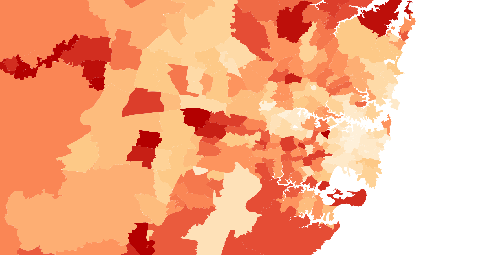
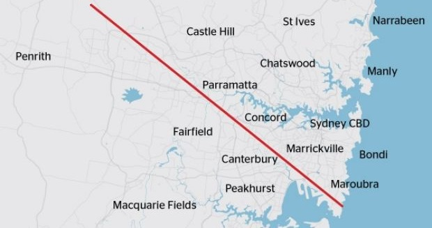
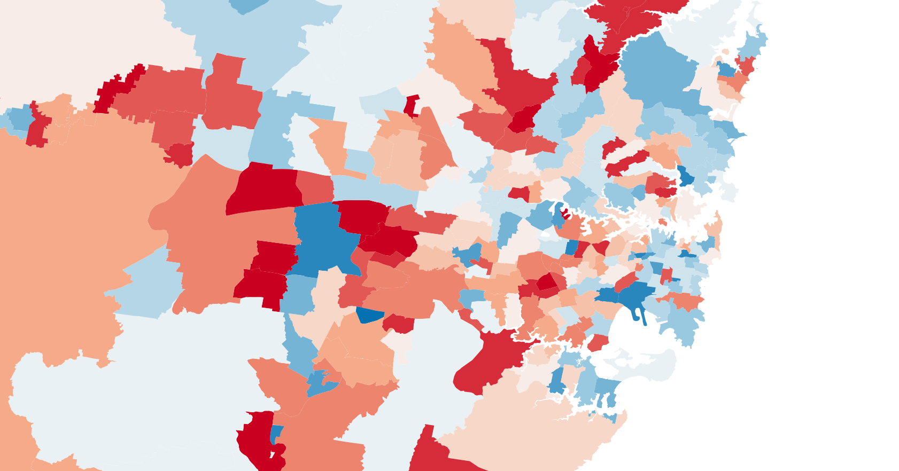

Data set G21 - Unpaid Assistance to a Person with a Disability by Age by Sex
Why is it collected?
Throughout Australia, there are many people who provide unpaid assistance to a person with a disability. This data records the age of these people, as well as their sex. It is an important statistic that considers what kind of people are providing unpaid assistance, where these people are located, and finally, how many of these people are there. This is important data to consider, when we are looking at developing health service facilities, as well as seeing how socioeconomic conditions may affect people with disabilities.
Which government departments would collect this and provide evidence?
This data would be very useful for the department of Department of Health NSW, as it will inform their decisions to fund disability services, furthermore, it may inform their plans for expanding their facilities to other regions.
Which private company may use this data and provide evidence?
This data can be used by a variety of companies from private healthcare companies,
Private healthcare companies such as Bupa may use this data to make decisions on where to locate their disability services. As this data will show them which key areas have a demand for their services.
How does this change the way you think about space?
This data changed the way we thought about space, as it demonstrated how much a population's demographics can change through space and how the problems a community faces changes so quickly through space.
How would this dataset change across Sydney?

The image above shows the percentage of people in the total population of a postcode area who provided unpaid assistance to a person with a disability.
From this image, we can see that in the CBD and the Eastern suburbs the percentage is rather low, however expanding outwards from the city of Sydney, we can see that there is an increase in the percentage of people who provide unpaid assistance. This is most obvious to the south and west of Sydney, near areas such as Liverpool and Bankstown. Furthermore, we can see that areas far from Sydney also feature a high percentage, with areas such as Horsley Park and Galston. These areas feature low socio economic conditions, and as a result access to disability services is poor, while the ability to afford these services are also low.
How does this relate to the ‘latte line’?

If we look at the two images above, we can see that 'latte line' is somewhat represented by the percentage of people who provide unpaid assistance from the total population of a postcode area. This is most likely due to socio economic factors playing a large part in whether a disabled person is able to afford paid assistance or must rely on the unpaid assistance of a caretaker. However interestingly on the prosperous side of the 'latte line', we can see that on the upper north shore there are areas where there are also a relatively high percentage unpaid caretakers. Although this is some what against what would be expected, the 'latte line' more or less is still evident within the dataset.
How did your data change between 2011-2016?

The image above shows the growth and decline in the percentage of people in the total population of a postcode area who provided unpaid assistance to a person with a disability.
The image above reflects the growth and decrease of people who provided unpaid assistance to a person with a disability among the total population. The darker shades of red reflect a greater growth in the percentage of these people. While darker shades of blue reflect a greater decrease in the percentage of these people.
If we look at the image above we can see that the majority of the growth in this data has been towards the southwest of Sydney. This reflects how the current disability services are becoming increasingly inadequate, due to worsening socioeconomic conditions in south west Sydney, a growing population in the area, or a combination of both. Some areas of noticeable growth include Haberfield and Horsley Park.
How is this data significant to people's lives?
This data is significant to people with disabilities as well as the people who provide unpaid assistance to people with disabilities. This data shows the numbers of people from these two groups of people, and how there is an imbalance in the distribution of these people throughout Sydney. As a result, we can see that there are areas which face many challenges regarding disability, while some areas very few of the same challenges. This data can be significant as it may be a catalyst for positive change to their living conditions. However, on the other hand, it may also be significant if it continues to reflect the inequality of certain areas, and how they will continue to face the challenges that revolve around providing care for someone with a disability.
Would it be a good thing to keep this data the same, or should it be changed across Sydney?
What this data shows is that there is an imbalance to whether a disabled person receives paid assistance from a carer/health professional or unpaid assistance from a caretaker/family member depending on the postcode you have. This shows that healthcare services and the ability to afford health care services are not equally distributed across Sydney. As a result of these findings, government policy, as well as private enterprise, should play a part in making changes to this data. Ideally, the percentage of unpaid assistance should be the same across all of Sydney. In addition, this percentage should be relatively low, as a person providing assistance should receive some level of recompense. Furthermore paid assistance may potentially provide a higher level of care for those that are disabled.
If you could change it how would you change it?
The main path to changing the problems posed by the current dataset would be to improve the socio economic conditions of areas on the southern side of the ‘latte Line’, this will allow the people in these areas to afford paid assistance. Furthermore, it will also stimulate the local economies in these areas, which will hopefully lead to better infrastructure and better services within these areas on the southern side of the ‘Latte Line.’ This strategy also needs to be reinforced by looking to invest in more public health service facilities in the areas with a high percentage of people who provide unpaid assistance for disabled people. This includes areas on the outer edges of Sydney, to the south west, and west.